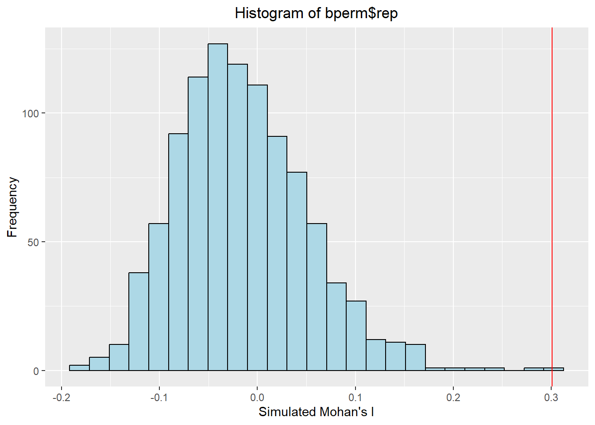
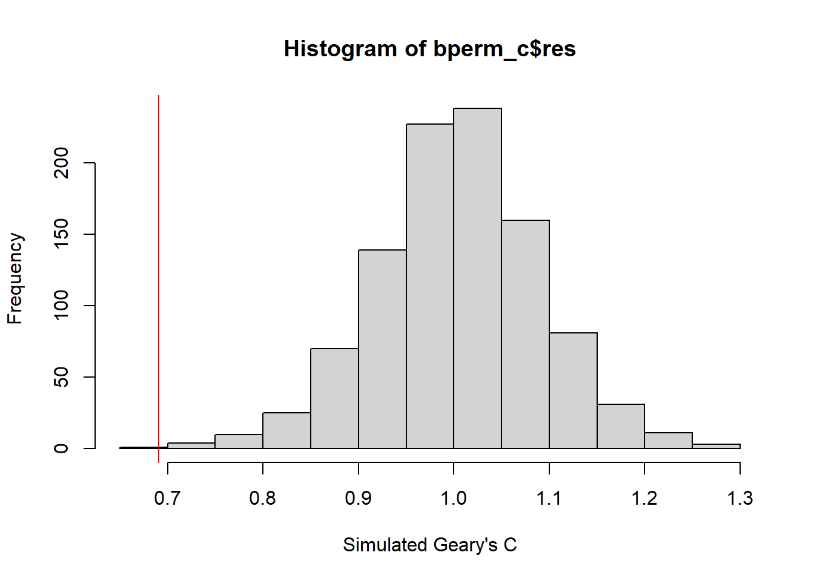
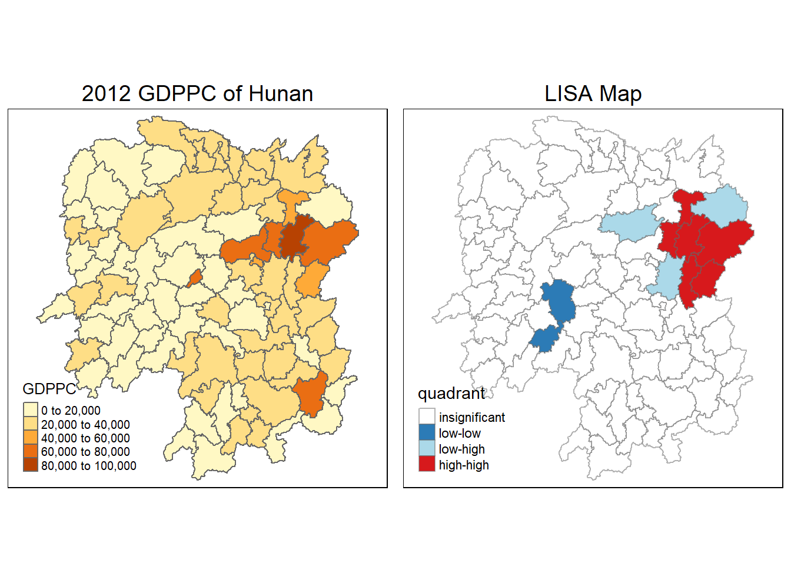

pacman::p_load(sf,spdep,tmap,tidyverse, ggplot2)Hands-On Exercise 2
Updated on 28-Nov-2022
(First published on 25-Nov-2022)
4.Global and Local Measures of Spatial Autocorrelation
Everything is related to everything else. But near things are more related than distant things
~(Waldo R. Tobler , 1970)
4.1 Overview
Use appropriate functions from R spdep and tmap packages to:
Compute Global Spatial Autocorrelation (GSA) statistics
Compute Local Indicator of Spatial Association (LISA) statistics for detecting clusters and outlines
Compute Getis-Ord’s Gi-Statisitics for detecting hot spot or/and cold spot areas
Visualise the analysis output by using the tmap package
4.2 Getting started
Our task in this study is to apply appropriate spatial statistical methods to discover if development in Hunan province of China is evenly distributed geographically.
We will use GDP per capita (GDPPC) as the measure of development.
4.2.1 Datasets available
They are:
Hunan province administrative boundary layer at county level. This is a geospatial data set in ESRI shapefile format.
Hunan_2012.csv: This csv file contains selected Hunan’s local development indicators in 2012.
4.2.2 Install and load the relevant R packages for the exercise
4.3 Getting the data in R environment
4.3.1 Import the ESRI shapefile
hunan = st_read(dsn = "Hands-On_Ex2/data/geospatial",layer = "Hunan")Reading layer `Hunan' from data source
`C:\Cabbie-UK\ISSS624\Hands-On_Ex\Hands-On_Ex2\data\geospatial'
using driver `ESRI Shapefile'
Simple feature collection with 88 features and 7 fields
Geometry type: POLYGON
Dimension: XY
Bounding box: xmin: 108.7831 ymin: 24.6342 xmax: 114.2544 ymax: 30.12812
Geodetic CRS: WGS 844.3.2 Import the Development Indicators .csv file
hunan2012 = read_csv("Hands-On_Ex2/data/aspatial/Hunan_2012.csv",show_col_types = FALSE)4.3.3 Perform relational join
To append the development indicators information into the hunan SpatialPolygonsDataFrame using a left_join().
hunan = left_join(hunan,hunan2012)Joining, by = "County"4.3.4 Visualise Regional Development Indicator
We prepare a basemap and a choropleth map showing the distribution of GDPPC 2012 by using qtm() of tmap package
equal <- tm_shape(hunan) +
tm_fill("GDPPC",
n = 5,
style = "equal") +
tm_borders(alpha = 0.5) +
tm_layout(main.title = "Equal interval classification",
main.title.position = "center",
main.title.size = 1.2,
legend.height = 0.26,
legend.width = 0.40)
quantile <- tm_shape(hunan) +
tm_fill("GDPPC",
n = 5,
style = "quantile") +
tm_borders(alpha = 0.5) +
tm_layout(main.title = "Quantile interval classification",
main.title.position = "center",
main.title.size = 1.2,
legend.height = 0.26,
legend.width = 0.40)
tmap_arrange(equal,
quantile,
asp=1,
ncol=2)4.4 Global Spatial Autocorrelation
In this section, we learn how to compute global spatial autocorrelation statistics and to perform spatial complete randomness test for global spatial autocorrelation.
4.4.1 Compute Contiguity Spatial Weights
Before we compute the global spatial autocorrelation statistics, we need to construct a spatial weights of the study area. The spatial weights is used to define the neighborhood relationships between the geographical units (i.e. counties) in the study area.
(This is covered in Section 3.6.3 of In-Class Ex1)
In the code chunk below, poly2nb() of spdep package is used to compute contiguity weight matrices for the study area. This function builds a neighbors list based on regions with contiguous boundaries.
# Compute continguity weight matrices using Queen method
wm_q <- poly2nb(hunan, queen=TRUE)
summary(wm_q)Neighbour list object:
Number of regions: 88
Number of nonzero links: 448
Percentage nonzero weights: 5.785124
Average number of links: 5.090909
Link number distribution:
1 2 3 4 5 6 7 8 9 11
2 2 12 16 24 14 11 4 2 1
2 least connected regions:
30 65 with 1 link
1 most connected region:
85 with 11 linksThe summary report above shows that there are 88 area units in Hunan. There are two area units - regions 30 and 65 - with only one neighbor. The most connected area unit - region 85 - has 11 neighbors.
4.4.2 Row-standardised weights matrix
Next, we need to assign weights to each neighboring polygon using the nb2listw() function.
(This is covered in Section 3.7.1 of In-Class Ex1)
rswm_q <- nb2listw(wm_q,
style="W",
zero.policy = TRUE)
rswm_qCharacteristics of weights list object:
Neighbour list object:
Number of regions: 88
Number of nonzero links: 448
Percentage nonzero weights: 5.785124
Average number of links: 5.090909
Weights style: W
Weights constants summary:
n nn S0 S1 S2
W 88 7744 88 37.86334 365.9147The input of nb2listw() must be an object of class nb. The syntax of the function has two major arguments, namely style and zero.policy.
style can take values “W”, “B”, “C”, “U”, “minmax” and “S”. B is the basic binary coding, W is row standardised (sums over all links to n), C is globally standardised (sums over all links to n), U is equal to C divided by the number of neighbours (sums over all links to unity), while S is the variance-stabilizing coding scheme proposed by Tiefelsdorf et al. 1999, p. 167-168 (sums over all links to n).
If zero policy is set to TRUE, weights vectors of zero length are inserted for regions without neighbor in the neighbors list. These will in turn generate lag values of zero, equivalent to the sum of products of the zero row t(rep(0, length=length(neighbours))) %*% x, for arbitrary numerical vector x of length length(neighbours). The spatially lagged value of x for the zero-neighbor region will then be zero, which may (or may not) be a sensible choice.
4.4.3 Global Spatial Autocorrelation: Moran’s I
The Global Moran’s I is a global statistic that provides us with a single value for our entire data set to describe if a variable of interest corresponds to the first law of geography - everything is related, but things that are closer together are more related than things further away. The Global Moran’s I operates by comparing how similar every object (such as its GDPPC) is to its neighbors, and then averaging out all of these comparisons to give us an overall impression about the spatial pattern of the variable.
In this section, we learn how to compute Moran’s I statistics testing by using moran.test() of spdep.
4.4.3.1 Maron’s I test
The Spatial Autocorrelation (Global Moran’s I) tool measures spatial autocorrelation based on both feature locations and feature values simultaneously. Given a set of features and an associated attribute, it evaluates whether the pattern expressed is clustered, dispersed, or random. The tool calculates the Moran’s I Index value and both a a z-score and p-value to evaluate the significance of the Index. P-values are numerical approximations of the area under the curve for a known distribution, limited by the test statistic.
#
moran.test(hunan$GDPPC,
listw=rswm_q,
zero.policy = TRUE,
na.action=na.omit)
Moran I test under randomisation
data: hunan$GDPPC
weights: rswm_q
Moran I statistic standard deviate = 4.7351, p-value = 1.095e-06
alternative hypothesis: greater
sample estimates:
Moran I statistic Expectation Variance
0.300749970 -0.011494253 0.004348351 The Spatial Autocorrelation (Global Moran’s I) tool is an inferential statistic, which means that the results of the analysis are always interpreted within the context of its null hypothesis. For the Global Moran’s I statistic, the null hypothesis states that the attribute being analyzed is randomly distributed among the features in the study area; said another way, the spatial processes promoting the observed pattern of values is random chance.
When the p-value returned by this tool is statistically significant, we can reject the null hypothesis. The table below summarizes interpretation of results:
| The p-value is not statistically significant | We cannot reject the null hypothesis. It is quite possible that the spatial distribution of feature values is the result of random spatial processes. The observed spatial pattern of feature values could very well be one of many possible versions of complete spatial randomness. |
| The p-value is statistically significant, and the z-score is positive. | We may reject the null hypothesis. The spatial distribution of high values and/or low values in the dataset is more spatially clustered than would be expected if underlying spatial processes were random. |
| The p-value is statistically significant, and the z-score is negative. | We may reject the null hypothesis. The spatial distribution of high values and low values in the dataset is more spatially dispersed than would be expected if underlying spatial processes were random. A dispersed spatial pattern often reflects some type of competitive process—a feature with a high value repels other features with high values; similarly, a feature with a low value repels other features with low values. |
The Moran’s I statistic is 0.3007, a positive value implies that there’s some degree of clustering. The p-value is <0.01 implying that we can reject the null hypothesis.
4.4.3.2 Compute Monte Carlo Moran’s I
The analytical approach to the Moran’s I analysis benefits from being fast. But it may be sensitive to irregularly distributed polygons. A safer approach to hypothesis testing is to run an Monte Carlo (MC) C simulation using the moran.mc() function. The moran.mc function takes an extra argument n, the number of simulations.
The code chunk below performs permutation test for Moran’s I statistic. A total of 1000 simulation will be performed.
set.seed(1234)
bperm= moran.mc(hunan$GDPPC,
listw=rswm_q,
nsim=999,
zero.policy = TRUE,
na.action=na.omit)
bperm
Monte-Carlo simulation of Moran I
data: hunan$GDPPC
weights: rswm_q
number of simulations + 1: 1000
statistic = 0.30075, observed rank = 1000, p-value = 0.001
alternative hypothesis: greaterThe MC simulation generates a very small p-value, 0.001. The simulated Moran I statisitic of 0.30075 is close to the computed one in the previous section . We can see the results graphically by passing the Moran’s I model to the plot function in the next section.
4.4.3.3 Visualise Monte Carlo Moran’s I
We first examine some summary statistics of the simulated Moran’s I.
mean(bperm$res[1:999])[1] -0.01504572var(bperm$res[1:999])[1] 0.004371574summary(bperm$res[1:999]) Min. 1st Qu. Median Mean 3rd Qu. Max.
-0.18339 -0.06168 -0.02125 -0.01505 0.02611 0.27593 Next we plot the distribution of the statistical values as a histogram by using the code chunk below.
hist(bperm$res,
freq=TRUE,
breaks=20,
xlab="Simulated Moran's I")
abline(v=0.30075,
col="red")The curve shows the distribution of Moran I values we could expect had the GDPPC been randomly distributed across the counties.
# Convert the S3 object to a dataframe as ggplot can only work with the latter
bperm.res = as.data.frame(bperm$res)
# Plot the histogram
ggplot(data = bperm.res, aes(x=bperm$res)) +
geom_histogram(bins = 25, color='black',fill="lightblue") +
labs(y='Frequency',x="Simulated Mohan's I", title = "Histogram of bperm$rep") +
theme(plot.title=element_text(hjust=0.5)) +
geom_vline(xintercept = 0.30075, color="red")
Note that our observed statistic, 0.300, falls to the right of the distribution suggesting that the GDPPC values are clustered and the result is significant.
4.4.4 Global Spatial Autocorrelation: Geary’s C
In this section, we learn how to compute Geary’s C statistics testing by using geary.test() of spdep.
4.4.4.1 Geary’s C test
Geary’s C is a measure of spatial autocorrelation or an attempt to determine if adjacent observations of the same phenomenon are correlated. The value of Geary’s C lies between 0 and some unspecified value greater than 1.
Geary’s C (Z value) is:
C = 1: observations are arranged randomly over space
Large c value (>1) : Dispersed, observations tend to be dissimilar;
Small c value (<1) : Clustered, observations tend to be similar;
0 <= c value <= 3
geary.test(hunan$GDPPC, listw=rswm_q)
Geary C test under randomisation
data: hunan$GDPPC
weights: rswm_q
Geary C statistic standard deviate = 3.6108, p-value = 0.0001526
alternative hypothesis: Expectation greater than statistic
sample estimates:
Geary C statistic Expectation Variance
0.6907223 1.0000000 0.0073364 Since p-value < 0.05, the level of significance, we reject the null hypothesis and conclude that the observed spatial pattern of GDPPC is not equally likely as any other spatial pattern (i.e. not spatially random). Also, given that the Geary’s C statistic is < 0.05, there’s some clustering on the map.
4.4.4.2 Compute Monte Carlo Geary’s C
The code chunk below performs permutation test for Geary’s C statistic by using geary.mc() of spdep
set.seed(1234)
bperm_c=geary.mc(hunan$GDPPC,
listw=rswm_q,
nsim=999)
bperm_c
Monte-Carlo simulation of Geary C
data: hunan$GDPPC
weights: rswm_q
number of simulations + 1: 1000
statistic = 0.69072, observed rank = 1, p-value = 0.001
alternative hypothesis: greaterWe see that the simulated Geary’s C statistic is similar to the one computed in the previous section with p-value < 0.05.
4.4.4.3 Visualise the Monte Carlo Geary’s C
We first examine some summary statistics of the simulated Geary’s C values.
mean(bperm_c$res[1:999])[1] 1.004402var(bperm_c$res[1:999])[1] 0.007436493summary(bperm_c$res[1:999]) Min. 1st Qu. Median Mean 3rd Qu. Max.
0.7142 0.9502 1.0052 1.0044 1.0595 1.2722 Next, we plot a histogram to reveal the distribution of the simulated values by using the code chunk below.
hist(bperm_c$res, freq=TRUE, breaks=20, xlab="Simulated Geary's C")
abline(v=0.6907223, col="red")
The simulated results for Moran’s I and Geary’s C statistics are the same. That is, the test statistics are significant and that there’s some degree of clustering on the map.
4.5 Spatial Correlogram
Spatial correlograms are great to examine patterns of spatial autocorrelation in our data or model residuals. They show how correlated pairs of spatial observations are when we increase the distance (lag) between them - they are plots of some index of autocorrelation (Moran’s I or Geary’s c) against distance.
4.5.1 Compute Moran’s I Correlogram
In the code chunk below, sp.correlogram() of spdep package is used to compute a 6-lag spatial correlogram of GDPPC. This will equivalent to examining the 1st to 6th order neighbors of each county.
# Method = "I" for Moran's I
MI_corr <- sp.correlogram(wm_q,
hunan$GDPPC,
order=6,
method="I",
style="W")
plot(MI_corr)
The Correlogram above shows the diffusing effect of the clustering with each increase in spatial lag of neighbors. That is, back to Tobler’s first law, near neighbors will contribute more to the clustering than distant neighbors. If the Moran’s I statistics of lag 2 to lag 6 decrease at a slower rate, this would mean that the clustering has a wider spread (between the lag 2 and lag 6 neighbors). In practice, the correlogram can used by urban planners to examine whether the development in a region should be spread to its neighboring regions and study the possible implications of doing so.
To understand if all autocorrelation values are statistically significant, we examine the full analysis results with the following code chunk:
print(MI_corr)Spatial correlogram for hunan$GDPPC
method: Moran's I
estimate expectation variance standard deviate Pr(I) two sided
1 (88) 0.3007500 -0.0114943 0.0043484 4.7351 2.189e-06 ***
2 (88) 0.2060084 -0.0114943 0.0020962 4.7505 2.029e-06 ***
3 (88) 0.0668273 -0.0114943 0.0014602 2.0496 0.040400 *
4 (88) 0.0299470 -0.0114943 0.0011717 1.2107 0.226015
5 (88) -0.1530471 -0.0114943 0.0012440 -4.0134 5.984e-05 ***
6 (88) -0.1187070 -0.0114943 0.0016791 -2.6164 0.008886 **
---
Signif. codes: 0 '***' 0.001 '**' 0.01 '*' 0.05 '.' 0.1 ' ' 14.5.2 Compute Geary’s C correlogram and plot
In the code chunk below, sp.correlogram() of spdep package is used to compute a 6-lag spatial correlogram of GDPPC.
# Method = "C" for Geary's C
GC_corr <- sp.correlogram(wm_q,
hunan$GDPPC,
order=6,
method="C",
style="W")
plot(GC_corr)
We print out the analysis report by using the code chunk below
print(GC_corr)Spatial correlogram for hunan$GDPPC
method: Geary's C
estimate expectation variance standard deviate Pr(I) two sided
1 (88) 0.6907223 1.0000000 0.0073364 -3.6108 0.0003052 ***
2 (88) 0.7630197 1.0000000 0.0049126 -3.3811 0.0007220 ***
3 (88) 0.9397299 1.0000000 0.0049005 -0.8610 0.3892612
4 (88) 1.0098462 1.0000000 0.0039631 0.1564 0.8757128
5 (88) 1.2008204 1.0000000 0.0035568 3.3673 0.0007592 ***
6 (88) 1.0773386 1.0000000 0.0058042 1.0151 0.3100407
---
Signif. codes: 0 '***' 0.001 '**' 0.01 '*' 0.05 '.' 0.1 ' ' 1The results above show that Moran’s I and Geary’s C values are inversely related.
4.6 Cluster and Outlier Analysis
Local Indicators of Spatial Association (“LISA”) are statistics that evaluate the existence of clusters (and not clustering) in the spatial arrangement of a given variable.
In this section, we learn how to apply appropriate LISA, especially local Moran’I to detect cluster and/or outlier from GDP per capita 2012 of Hunan Province, PRC.
4.6.1 Compute local Moran’s I
The Local Moran’s I statistic is relatively similar to the Global Moran’s Iin that it is providing a measure of how similar locations are to their neighbors. However, the difference is that each location, i, receive its own Ivalue, as well as its own variance, z value, expected I, and variance of I
To compute local Moran’s I, the localmoran() function of spdep will be used. The code chunks below are used to compute local Moran’s I of GDPPC2012 at the county level.
fips <- order(hunan$County)
localMI <- localmoran(hunan$GDPPC, rswm_q)
head(localMI) Ii E.Ii Var.Ii Z.Ii Pr(z != E(Ii))
1 -0.001468468 -2.815006e-05 4.723841e-04 -0.06626904 0.9471636
2 0.025878173 -6.061953e-04 1.016664e-02 0.26266425 0.7928094
3 -0.011987646 -5.366648e-03 1.133362e-01 -0.01966705 0.9843090
4 0.001022468 -2.404783e-07 5.105969e-06 0.45259801 0.6508382
5 0.014814881 -6.829362e-05 1.449949e-03 0.39085814 0.6959021
6 -0.038793829 -3.860263e-04 6.475559e-03 -0.47728835 0.6331568localmoran() function returns a matrix of values whose columns are:
Ii: the local Moran’s I statistics
E.Ii: the expectation of local moran statistic under the randomisation hypothesis
Var.Ii: the variance of local moran statistic under the randomisation hypothesis
Z.Ii:the standard deviate of local moran statistic
Pr(): the p-value of local moran statistic
The column on the far right provides the p-values (ignore the z>0 text and just think of these as p-values). We can relate these p-values to different confidence levels (e.g. 99%, 95%, etc.) in order to make a conclusion about the spatial distribution of attributes in ther dataset.
The code chunk below list the content of the local Moran matrix derived by using printCoefmat().
printCoefmat(data.frame(localMI[fips,], row.names=hunan$County[fips]), check.names=FALSE) Ii E.Ii Var.Ii Z.Ii Pr.z....E.Ii..
Anhua -2.2493e-02 -5.0048e-03 5.8235e-02 -7.2467e-02 0.9422
Anren -3.9932e-01 -7.0111e-03 7.0348e-02 -1.4791e+00 0.1391
Anxiang -1.4685e-03 -2.8150e-05 4.7238e-04 -6.6269e-02 0.9472
Baojing 3.4737e-01 -5.0089e-03 8.3636e-02 1.2185e+00 0.2230
Chaling 2.0559e-02 -9.6812e-04 2.7711e-02 1.2932e-01 0.8971
Changning -2.9868e-05 -9.0010e-09 1.5105e-07 -7.6828e-02 0.9388
Changsha 4.9022e+00 -2.1348e-01 2.3194e+00 3.3590e+00 0.0008
Chengbu 7.3725e-01 -1.0534e-02 2.2132e-01 1.5895e+00 0.1119
Chenxi 1.4544e-01 -2.8156e-03 4.7116e-02 6.8299e-01 0.4946
Cili 7.3176e-02 -1.6747e-03 4.7902e-02 3.4200e-01 0.7324
Dao 2.1420e-01 -2.0824e-03 4.4123e-02 1.0297e+00 0.3032
Dongan 1.5210e-01 -6.3485e-04 1.3471e-02 1.3159e+00 0.1882
Dongkou 5.2918e-01 -6.4461e-03 1.0748e-01 1.6338e+00 0.1023
Fenghuang 1.8013e-01 -6.2832e-03 1.3257e-01 5.1198e-01 0.6087
Guidong -5.9160e-01 -1.3086e-02 3.7003e-01 -9.5104e-01 0.3416
Guiyang 1.8240e-01 -3.6908e-03 3.2610e-02 1.0305e+00 0.3028
Guzhang 2.8466e-01 -8.5054e-03 1.4152e-01 7.7931e-01 0.4358
Hanshou 2.5878e-02 -6.0620e-04 1.0167e-02 2.6266e-01 0.7928
Hengdong 9.9964e-03 -4.9063e-04 6.7742e-03 1.2742e-01 0.8986
Hengnan 2.8064e-02 -3.2160e-04 3.7597e-03 4.6294e-01 0.6434
Hengshan -5.8201e-03 -3.0437e-05 5.1076e-04 -2.5618e-01 0.7978
Hengyang 6.2997e-02 -1.3046e-03 2.1865e-02 4.3486e-01 0.6637
Hongjiang 1.8790e-01 -2.3019e-03 3.1725e-02 1.0678e+00 0.2856
Huarong -1.5389e-02 -1.8667e-03 8.1030e-02 -4.7503e-02 0.9621
Huayuan 8.3772e-02 -8.5569e-04 2.4495e-02 5.4072e-01 0.5887
Huitong 2.5997e-01 -5.2447e-03 1.1077e-01 7.9685e-01 0.4255
Jiahe -1.2431e-01 -3.0550e-03 5.1111e-02 -5.3633e-01 0.5917
Jianghua 2.8651e-01 -3.8280e-03 8.0968e-02 1.0204e+00 0.3076
Jiangyong 2.4337e-01 -2.7082e-03 1.1746e-01 7.1800e-01 0.4728
Jingzhou 1.8270e-01 -8.5106e-04 2.4363e-02 1.1759e+00 0.2396
Jinshi -1.1988e-02 -5.3666e-03 1.1334e-01 -1.9667e-02 0.9843
Jishou -2.8680e-01 -2.6305e-03 4.4028e-02 -1.3543e+00 0.1756
Lanshan 6.3334e-02 -9.6365e-04 2.0441e-02 4.4972e-01 0.6529
Leiyang 1.1581e-02 -1.4948e-04 2.5082e-03 2.3422e-01 0.8148
Lengshuijiang -1.7903e+00 -8.2129e-02 2.1598e+00 -1.1623e+00 0.2451
Li 1.0225e-03 -2.4048e-07 5.1060e-06 4.5260e-01 0.6508
Lianyuan -1.4672e-01 -1.8983e-03 1.9145e-02 -1.0467e+00 0.2952
Liling 1.3774e+00 -1.5097e-02 4.2601e-01 2.1335e+00 0.0329
Linli 1.4815e-02 -6.8294e-05 1.4499e-03 3.9086e-01 0.6959
Linwu -2.4621e-03 -9.0703e-06 1.9258e-04 -1.7676e-01 0.8597
Linxiang 6.5904e-02 -2.9028e-03 2.5470e-01 1.3634e-01 0.8916
Liuyang 3.3688e+00 -7.7502e-02 1.5180e+00 2.7972e+00 0.0052
Longhui 8.0801e-01 -1.1377e-02 1.5538e-01 2.0787e+00 0.0376
Longshan 7.5663e-01 -1.1100e-02 3.1449e-01 1.3690e+00 0.1710
Luxi 1.8177e-01 -2.4855e-03 3.4249e-02 9.9561e-01 0.3194
Mayang 2.1852e-01 -5.8773e-03 9.8049e-02 7.1663e-01 0.4736
Miluo 1.8704e+00 -1.6927e-02 2.7925e-01 3.5715e+00 0.0004
Nan -9.5789e-03 -4.9497e-04 6.8341e-03 -1.0988e-01 0.9125
Ningxiang 1.5607e+00 -7.3878e-02 8.0012e-01 1.8274e+00 0.0676
Ningyuan 2.0910e-01 -7.0884e-03 8.2306e-02 7.5356e-01 0.4511
Pingjiang -9.8964e-01 -2.6457e-03 5.6027e-02 -4.1698e+00 0.0000
Qidong 1.1806e-01 -2.1207e-03 2.4747e-02 7.6396e-01 0.4449
Qiyang 6.1966e-02 -7.3374e-04 8.5743e-03 6.7712e-01 0.4983
Rucheng -3.6992e-01 -8.8999e-03 2.5272e-01 -7.1814e-01 0.4727
Sangzhi 2.5053e-01 -4.9470e-03 6.8000e-02 9.7972e-01 0.3272
Shaodong -3.2659e-02 -3.6592e-05 5.0546e-04 -1.4510e+00 0.1468
Shaoshan 2.1223e+00 -5.0227e-02 1.3668e+00 1.8583e+00 0.0631
Shaoyang 5.9499e-01 -1.1253e-02 1.3012e-01 1.6807e+00 0.0928
Shimen -3.8794e-02 -3.8603e-04 6.4756e-03 -4.7729e-01 0.6332
Shuangfeng 9.2835e-03 -2.2867e-03 3.1516e-02 6.5174e-02 0.9480
Shuangpai 8.0591e-02 -3.1366e-04 8.9838e-03 8.5358e-01 0.3933
Suining 3.7585e-01 -3.5933e-03 4.1870e-02 1.8544e+00 0.0637
Taojiang -2.5394e-01 -1.2395e-03 1.4477e-02 -2.1002e+00 0.0357
Taoyuan 1.4729e-02 -1.2039e-04 8.5103e-04 5.0903e-01 0.6107
Tongdao 4.6482e-01 -6.9870e-03 1.9879e-01 1.0582e+00 0.2900
Wangcheng 4.4220e+00 -1.1067e-01 1.3596e+00 3.8873e+00 0.0001
Wugang 7.1003e-01 -7.8144e-03 1.0710e-01 2.1935e+00 0.0283
Xiangtan 2.4530e-01 -3.6457e-04 3.2319e-03 4.3213e+00 0.0000
Xiangxiang 2.6271e-01 -1.2703e-03 2.1290e-02 1.8092e+00 0.0704
Xiangyin 5.4525e-01 -4.7442e-03 7.9236e-02 1.9539e+00 0.0507
Xinhua 1.1810e-01 -6.2649e-03 8.6001e-02 4.2409e-01 0.6715
Xinhuang 1.5725e-01 -4.1820e-03 3.6648e-01 2.6667e-01 0.7897
Xinning 6.8928e-01 -9.6674e-03 2.0328e-01 1.5502e+00 0.1211
Xinshao 5.7578e-02 -8.5932e-03 1.1769e-01 1.9289e-01 0.8470
Xintian -7.4050e-03 -5.1493e-03 1.0877e-01 -6.8395e-03 0.9945
Xupu 3.2406e-01 -5.7468e-03 5.7735e-02 1.3726e+00 0.1699
Yanling -6.9021e-02 -5.9211e-04 9.9306e-03 -6.8667e-01 0.4923
Yizhang -2.6844e-01 -2.2463e-03 4.7588e-02 -1.2202e+00 0.2224
Yongshun 6.3064e-01 -1.1350e-02 1.8830e-01 1.4795e+00 0.1390
Yongxing 4.3411e-01 -9.0735e-03 1.5088e-01 1.1409e+00 0.2539
You 7.8750e-02 -7.2728e-03 1.2116e-01 2.4714e-01 0.8048
Yuanjiang 2.0004e-04 -1.7760e-04 2.9798e-03 6.9181e-03 0.9945
Yuanling 8.7298e-03 -2.2981e-06 2.3221e-05 1.8121e+00 0.0700
Yueyang 4.1189e-02 -1.9768e-04 2.3113e-03 8.6085e-01 0.3893
Zhijiang 1.0476e-01 -7.8123e-04 1.3100e-02 9.2214e-01 0.3565
Zhongfang -2.2685e-01 -2.1455e-03 3.5927e-02 -1.1855e+00 0.2358
Zhuzhou 3.2864e-01 -5.2432e-04 7.2391e-03 3.8688e+00 0.0001
Zixing -7.6849e-01 -8.8210e-02 9.4057e-01 -7.0144e-01 0.48304.6.1.1 Map the local Moran’s I
Before mapping the local Moran’s I map, we append the local Moran’s I dataframe (i.e. localMI) onto hunan SpatialPolygonDataFrame. The code chunks below can be used to perform the task. The SpatialPolygonDataFrame is called hunan.localMI.
hunan.localMI <- cbind(hunan,localMI) %>%
rename(Pr.Ii = Pr.z....E.Ii..)Using choropleth mapping functions of tmap package, we can plot the local Moran’s I values by using the code chinks below.
tm_shape(hunan.localMI) +
tm_fill(col = "Ii",
style = "pretty",
palette = "RdBu",
title = "Local Moran statistics") +
tm_borders(alpha = 0.5) +
tm_layout(main.title = "Local Moran's I Statistics",
main.title.position = "center",
main.title.size = 1.2,
legend.height = 0.26,
legend.width = 0.40)Variable(s) "Ii" contains positive and negative values, so midpoint is set to 0. Set midpoint = NA to show the full spectrum of the color palette.4.6.1.2 Map the local Moran’s I p-values
The choropleth shows there is evidence for both positive and negative Ii values. However, it is useful to consider the p-values for each of these values.
The code chunks below produce a choropleth map of Moran’s I p-values by using functions of tmap package
tm_shape(hunan.localMI) +
tm_fill(col = "Pr.Ii",
breaks=c(-Inf, 0.001, 0.01, 0.05, 0.1, Inf),
palette="-Blues",
title = "Local Moran's I p-values") +
tm_borders(alpha = 0.5) +
tm_layout(main.title = "Local Moran's I p-values",
main.title.position = "center",
main.title.size = 1.2,
legend.height = 0.26,
legend.width = 0.40)4.6.1.3 Map both local Moran’s I values and p-values
localMI.map <- tm_shape(hunan.localMI) +
tm_fill(col = "Ii",
style = "pretty",
title = "Local Moran statistics") +
tm_borders(alpha = 0.5) +
tm_layout(main.title = "Local Moran's I statistics",
main.title.position = "center",
main.title.size = 1.2,
legend.height = 0.26,
legend.width = 0.40)
pvalue.map <- tm_shape(hunan.localMI) +
tm_fill(col = "Pr.Ii",
breaks=c(-Inf, 0.001, 0.01, 0.05, 0.1, Inf),
palette="-Blues",
title = "Local Moran's I p-values") +
tm_borders(alpha = 0.5) +
tm_layout(main.title = "Local Moran's I p-values",
main.title.position = "center",
main.title.size = 1.2,
legend.height = 0.26,
legend.width = 0.40)
tmap_arrange(localMI.map, pvalue.map, asp=1, ncol=2)Variable(s) "Ii" contains positive and negative values, so midpoint is set to 0. Set midpoint = NA to show the full spectrum of the color palette.4.7 Create a LISA Cluster Map
The LISA Cluster Map shows the significant locations color coded by type of spatial autocorrelation. The first step before we can generate the LISA cluster map is to plot the Moran scatterplot.
4.7.1 Plot Moran scatterplot
The Moran scatterplot illustrates the relationship between the values of the chosen attribute at each location and the average value of the same attribute at neighboring locations.
The code chunk below plots the Moran scatterplot of GDPPC 2012 by using moran.plot() of spdep.
nci <- moran.plot(hunan$GDPPC, rswm_q,
labels=as.character(hunan$County),
xlab="GDPPC 2012",
ylab="Spatially Lag GDPPC 2012")
Notice that the plot is split in 4 quadrants. The x-axis represents the values at location i, while the y-axis represents values in the neighborhood of location i. Therefore, values in the top-right of the scatterplot represent locations in which the attribute at i and its neighbors are well above the mean, indicating positive spatial autocorrelation. In the above, the top right corner belongs to areas that have high GDPPC and are surrounded by other areas that also have above average level of GDPPC (high-high spatial autocorrelation).
Points in the lower-left corner of the plot indicate locations in which the attribute at i and its neighbors are below the mean; this also represents locations of positive spatial autocorrelation because nearby locations are similar (low-low spatial autocorrelation) . In contrast, the lower-right and upper-left quadrant correspond to negative spatial autocorrelation (dissimilar values at neighboring locations and hence treated as outliers). We refer to them as respectively high-low and low-high spatial autocorrelation.
The solid diagonal line is a best-fit line through the points, indicating the presence of positive spatial autocorrelation throughout the entire dataset. Note that points represent with a diamond shape are values that are deemed to be significant at a specific level of confidence; the numbers next to these points simply represent their ID number.
It is important to keep in mind that the classification as such does not imply significance.
4.7.2 Plot Moran scatterplot with standardised variable
First we use scale() to centers and scales the variable. Here centering is done by subtracting the mean (omitting NAs) the corresponding columns, and scaling is done by dividing the (centered) variable by their standard deviations.
hunan$Z.GDPPC <- scale(hunan$GDPPC) %>% as.vector The as.vector() added to the end is to make sure that the data type we get out of this is a vector, that map neatly into out dataframe.
Now, we are ready to plot the Moran scatterplot again by using the code chunk below.
nci2 <- moran.plot(hunan$Z.GDPPC, rswm_q,
labels=as.character(hunan$County),
xlab="z-GDPPC 2012",
ylab="Spatially Lag z-GDPPC 2012")
4.7.3 Prepare the LISA map classes
The code chunks below show the steps to prepare a LISA cluster map.
quadrant <- vector(mode="numeric",length=nrow(localMI))Next, we centers the variable of interest around its mean.
hunan$lag_GDPPC <- lag.listw(rswm_q, hunan$GDPPC)
DV <- hunan$lag_GDPPC - mean(hunan$lag_GDPPC) This is follow by centering the local Moran’s around the mean.
LM_I <- localMI[,1] - mean(localMI[,1]) Next, we will set a statistical significance level for the local Moran.
signif <- 0.05 The following four command lines define the low-low (1), low-high (2), high-low (3) and high-high (4) categories.
# LM_I > 0 => Positive Autocorrelation, DV < 0 => Low
# Low-Low => Low and neighbors are Low
quadrant[DV <0 & LM_I>0] <- 1
# LM_I<0 => Negative Autocorrelation, DV > 0 => High neigbors
# Low-High => Low outlier among High neighbors
quadrant[DV >0 & LM_I<0] <- 2
# LM_I < 0 => Negative Autocorrelation, DV < 0 => Low neighors
# High-Low => High outlier among Low neighbors
quadrant[DV <0 & LM_I<0] <- 3
# LM_I > 0 => Positive Autocorrelation, DV > 0 => High
# High - High => High and neighbors are High
quadrant[DV >0 & LM_I>0] <- 4 Lastly, places non-significant Moran in the category 0.
quadrant[localMI[,5]>signif] <- 04.7.4 Plot LISA map
We plot both the local Moran’s I values map and its corresponding p-values map next to each other.
gdppc <- qtm(hunan, "GDPPC") +
tm_layout(main.title = "2012 GDPPC of Hunan",
main.title.position = "center",
main.title.size = 1.2,
legend.height = 0.26,
legend.width = 0.40)
hunan.localMI$quadrant <- quadrant
colors <- c("#ffffff", "#2c7bb6", "#abd9e9", "#fdae61", "#d7191c")
clusters <- c("insignificant", "low-low", "low-high", "high-low", "high-high")
LISAmap <- tm_shape(hunan.localMI) +
tm_fill(col = "quadrant",
style = "cat",
palette = colors[c(sort(unique(quadrant)))+1],
labels = clusters[c(sort(unique(quadrant)))+1],
popup.vars = c("")) +
tm_view(set.zoom.limits = c(11,17)) +
tm_borders(alpha=0.5) +
tm_layout(main.title = "LISA Map",
main.title.position = "center",
main.title.size = 1.2,
legend.height = 0.26,
legend.width = 0.40)
tmap_arrange(gdppc, LISAmap, asp=1, ncol=2)
4.8 Hot Spot and Cold Spot Area Analysis
Beside detecting cluster and outliers, localised spatial statistics can be also used to detect hot spot and/or cold spot areas.
The term ‘hot spot’ has been used generically across disciplines to describe a region or value that is higher relative to its surroundings (Lepers et al 2005, Aben et al 2012, Isobe et al 2015).
4.8.1 Getis and Ord’s G-Statistics
An alternative spatial statistics to detect spatial anomalies is the Getis and Ord’s G-statistics (Getis and Ord, 1972; Ord and Getis, 1995). It looks at neighbors within a defined proximity to identify where either high or low values clutser spatially. Here, statistically significant hot-spots are recognised as areas of high values where other areas within a neighborhood range also share high values too.
The analysis consists of three steps:
Deriving spatial weight matrix
Computing Gi statistics
Mapping Gi statistics
4.8.2 Deriving distance-based weight matrix
First, we need to define a new set of neighbors. Whist the spatial autocorrelation considered units which shared borders, for Getis-Ord we are defining neighbors based on distance.
There are two type of distance-based proximity matrix, they are:
fixed distance weight matrix; and
adaptive distance weight matrix.
4.8.2.1 Deriving the centroid of each county
(This is covered in Section 3.5.3.1 of In-Class Ex1)
longitude <- map_dbl(hunan$geometry, ~st_centroid(.x)[[1]])
latitude <- map_dbl(hunan$geometry, ~st_centroid(.x)[[2]])
coords <- cbind(longitude, latitude)4.8.2.2 Determine the cut-off distance
(This is covered in Section 3.6.1 of In-Class Ex1)
k1 <- knn2nb(knearneigh(coords))
k1dists <- unlist(nbdists(k1, coords, longlat = TRUE))
summary(k1dists) Min. 1st Qu. Median Mean 3rd Qu. Max.
24.79 32.57 38.01 39.07 44.52 61.79 The summary report shows that the largest first nearest neighbour distance is 61.79 km, so using this as the upper threshold gives certainty that all units will have at least one neighbor.
4.8.2.3 Compute fixed distance weight matrix
(This is covered in Section 3.6.2.1 of In-Class Ex1)
wm_d62 <- dnearneigh(coords, 0, 62, longlat = TRUE)
wm_d62Neighbour list object:
Number of regions: 88
Number of nonzero links: 324
Percentage nonzero weights: 4.183884
Average number of links: 3.681818 Next, we use nb2listw() to convert the nb object into spatial weights object.
wm62_lw <- nb2listw(wm_d62, style = 'B')
summary(wm62_lw)Characteristics of weights list object:
Neighbour list object:
Number of regions: 88
Number of nonzero links: 324
Percentage nonzero weights: 4.183884
Average number of links: 3.681818
Link number distribution:
1 2 3 4 5 6
6 15 14 26 20 7
6 least connected regions:
6 15 30 32 56 65 with 1 link
7 most connected regions:
21 28 35 45 50 52 82 with 6 links
Weights style: B
Weights constants summary:
n nn S0 S1 S2
B 88 7744 324 648 54404.8.3 Compute adaptive distance weight matrix
(This is covered in Section 3.6.3 of In-Class Ex1)
To control the numbers of neighbors directly using k-nearest neighbors, we can tweak the k argument in the knearneigh() function.
knn <- knn2nb(knearneigh(coords, k=8))
knnNeighbour list object:
Number of regions: 88
Number of nonzero links: 704
Percentage nonzero weights: 9.090909
Average number of links: 8
Non-symmetric neighbours listNext, nb2listw() is used to convert the nb object into spatial weights object.
knn_lw <- nb2listw(knn, style = 'B')
summary(knn_lw)Characteristics of weights list object:
Neighbour list object:
Number of regions: 88
Number of nonzero links: 704
Percentage nonzero weights: 9.090909
Average number of links: 8
Non-symmetric neighbours list
Link number distribution:
8
88
88 least connected regions:
1 2 3 4 5 6 7 8 9 10 11 12 13 14 15 16 17 18 19 20 21 22 23 24 25 26 27 28 29 30 31 32 33 34 35 36 37 38 39 40 41 42 43 44 45 46 47 48 49 50 51 52 53 54 55 56 57 58 59 60 61 62 63 64 65 66 67 68 69 70 71 72 73 74 75 76 77 78 79 80 81 82 83 84 85 86 87 88 with 8 links
88 most connected regions:
1 2 3 4 5 6 7 8 9 10 11 12 13 14 15 16 17 18 19 20 21 22 23 24 25 26 27 28 29 30 31 32 33 34 35 36 37 38 39 40 41 42 43 44 45 46 47 48 49 50 51 52 53 54 55 56 57 58 59 60 61 62 63 64 65 66 67 68 69 70 71 72 73 74 75 76 77 78 79 80 81 82 83 84 85 86 87 88 with 8 links
Weights style: B
Weights constants summary:
n nn S0 S1 S2
B 88 7744 704 1300 230144.9 Compute Gi statistics
4.9.1 Gi statistics using fixed distance
fips <- order(hunan$County)
gi.fixed <- localG(hunan$GDPPC, wm62_lw)
gi.fixed [1] 0.436075843 -0.265505650 -0.073033665 0.413017033 0.273070579
[6] -0.377510776 2.863898821 2.794350420 5.216125401 0.228236603
[11] 0.951035346 -0.536334231 0.176761556 1.195564020 -0.033020610
[16] 1.378081093 -0.585756761 -0.419680565 0.258805141 0.012056111
[21] -0.145716531 -0.027158687 -0.318615290 -0.748946051 -0.961700582
[26] -0.796851342 -1.033949773 -0.460979158 -0.885240161 -0.266671512
[31] -0.886168613 -0.855476971 -0.922143185 -1.162328599 0.735582222
[36] -0.003358489 -0.967459309 -1.259299080 -1.452256513 -1.540671121
[41] -1.395011407 -1.681505286 -1.314110709 -0.767944457 -0.192889342
[46] 2.720804542 1.809191360 -1.218469473 -0.511984469 -0.834546363
[51] -0.908179070 -1.541081516 -1.192199867 -1.075080164 -1.631075961
[56] -0.743472246 0.418842387 0.832943753 -0.710289083 -0.449718820
[61] -0.493238743 -1.083386776 0.042979051 0.008596093 0.136337469
[66] 2.203411744 2.690329952 4.453703219 -0.340842743 -0.129318589
[71] 0.737806634 -1.246912658 0.666667559 1.088613505 -0.985792573
[76] 1.233609606 -0.487196415 1.626174042 -1.060416797 0.425361422
[81] -0.837897118 -0.314565243 0.371456331 4.424392623 -0.109566928
[86] 1.364597995 -1.029658605 -0.718000620
attr(,"cluster")
[1] Low Low High High High High High High High Low Low High Low Low Low
[16] High High High High Low High High Low Low High Low Low Low Low Low
[31] Low Low Low High Low Low Low Low Low Low High Low Low Low Low
[46] High High Low Low Low Low High Low Low Low Low Low High Low Low
[61] Low Low Low High High High Low High Low Low High Low High High Low
[76] High Low Low Low Low Low Low High High Low High Low Low
Levels: Low High
attr(,"gstari")
[1] FALSE
attr(,"call")
localG(x = hunan$GDPPC, listw = wm62_lw)
attr(,"class")
[1] "localG"The Gi statistics is represented as a Z-score. Larger values represent a greater intensity of clustering and the direction (positive or negative) indicates high or low clusters.
Next, we will join the Gi values to their corresponding hunan sf data frame by using the code chunk below.
hunan.gi <- cbind(hunan, as.matrix(gi.fixed)) %>%
rename(gstat_fixed = as.matrix.gi.fixed.)The code chunk above performs three tasks:
First, it convert the output vector (i.e. gi.fixed) into r matrix object by using as.matrix().
Next, cbind() is used to join hunan@data and gi.fixed matrix to produce a new SpatialPolygonDataFrame called hunan.gi.
Lastly, the field name of the gi values is renamed to gstat_fixed by using rename().
4.9.2 Map Gi values with fixed distance weights
The code chunk below shows the functions used to map the Gi values derived using fixed distance weight matrix.
gdppc <- qtm(hunan, "GDPPC") +
tm_layout(main.title = "2012 GDPPC of Hunan\n ",
main.title.position = "center",
main.title.size = 1.2,
legend.height = 0.26,
legend.width = 0.40)
Gimap <-tm_shape(hunan.gi) +
tm_fill(col = "gstat_fixed",
style = "pretty",
palette="-RdBu",
title = "local Gi") +
tm_borders(alpha = 0.5) +
tm_layout(main.title = "Local Gi Statistics\n(Fixed Distance)",
main.title.position = "center",
main.title.size = 1.2,
legend.height = 0.26,
legend.width = 0.40)
tmap_arrange(gdppc, Gimap, asp=1, ncol=2)Variable(s) "gstat_fixed" contains positive and negative values, so midpoint is set to 0. Set midpoint = NA to show the full spectrum of the color palette.Hotspots from the local Gi chrolopleth map are almost in sync with the counties with highest GDPPC
4.9.3 Gi statistics using adaptive distance
The code chunk below are used to compute the Gi values for GDPPC2012 by using an adaptive distance weight matrix (i.e knb_lw).
fips <- order(hunan$County)
gi.adaptive <- localG(hunan$GDPPC, knn_lw)
hunan.gi <- cbind(hunan, as.matrix(gi.adaptive)) %>%
rename(gstat_adaptive = as.matrix.gi.adaptive.)4.9.4 Map Gi values with adaptive distance weights
It is time for us to visualise the locations of hot spot and cold spot areas. The choropleth mapping functions of tmap package will be used to map the Gi values.
The code chunk below shows the functions used to map the Gi values derived using fixed distance weight matrix.
gdppc<- qtm(hunan, "GDPPC") +
tm_layout(main.title = "2012 GDPPC of Hunan\n ",
main.title.position = "center",
main.title.size = 1.2,
legend.height = 0.26,
legend.width = 0.40)
Gimap <- tm_shape(hunan.gi) +
tm_fill(col = "gstat_adaptive",
style = "pretty",
palette="-RdBu",
title = "local Gi") +
tm_borders(alpha = 0.5) +
tm_layout(main.title = "Local Gi Statistics\n(Adpative Distance)",
main.title.position = "center",
main.title.size = 1.2,
legend.height = 0.26,
legend.width = 0.40)
tmap_arrange(gdppc,
Gimap,
asp=1,
ncol=2)Variable(s) "gstat_adaptive" contains positive and negative values, so midpoint is set to 0. Set midpoint = NA to show the full spectrum of the color palette.4.10 References
Spatial Autocorrelation: How spatial objects affect other nearby spatial objects
How Spatial Autocorrelation (Global Moran’s I) works
How Spatial Autocorrelation (Global Moran’s I) works—ArcGIS Pro | Documentation
A basic introduction to Moran’s I analysis in R
A basic introduction to Moran’s I analysis in R (mgimond.github.io)
Global vs Local Spatial Autocorrelation